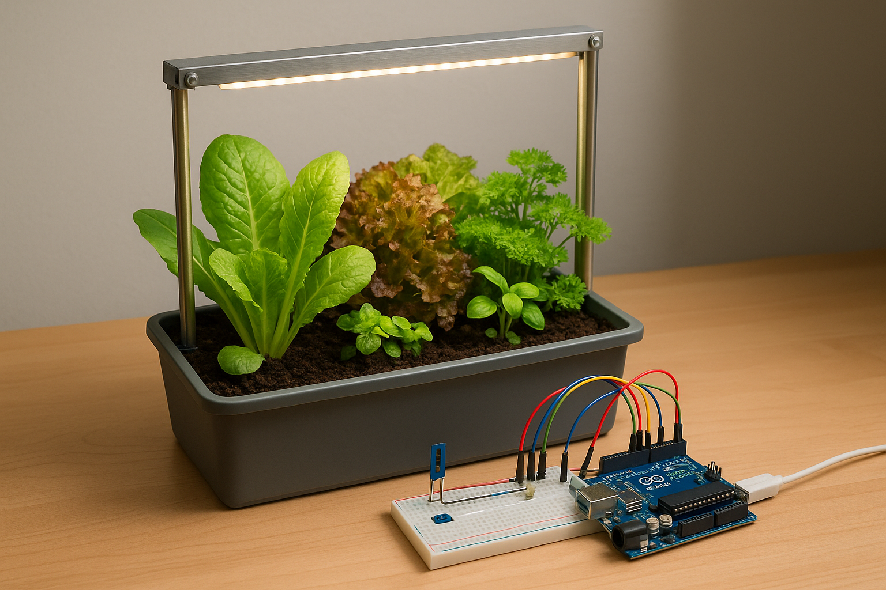
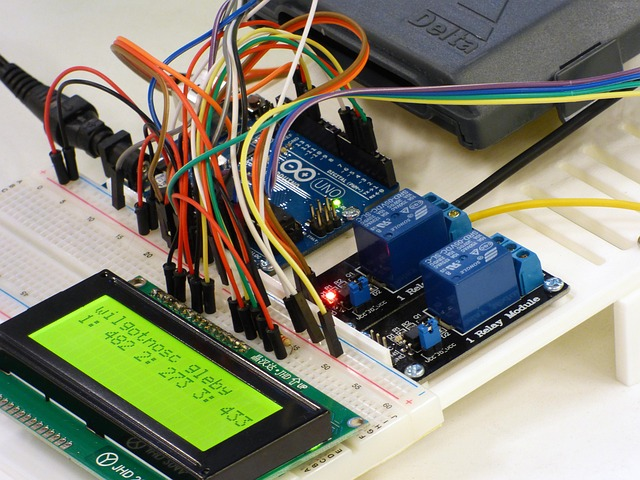
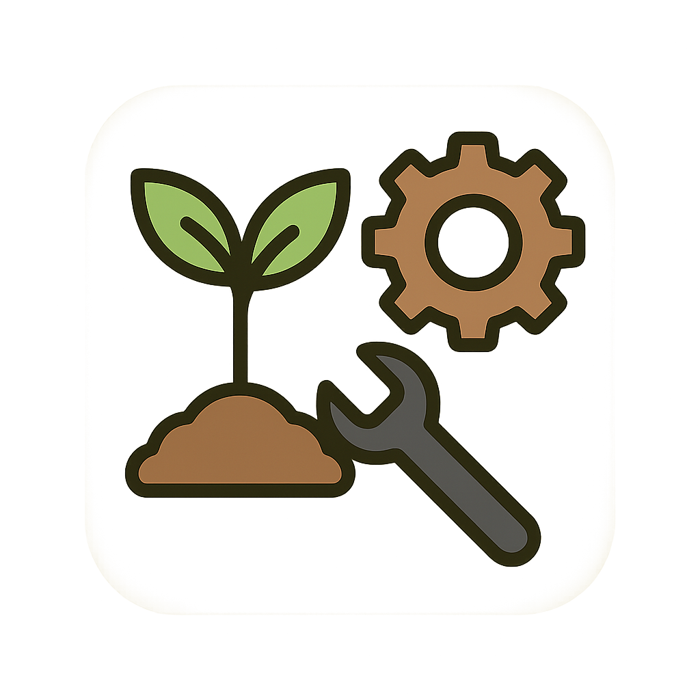

Produtos & Serviços
Na Hortamática você encontra soluções completas para auxiliar na sua horta. De kits personalizados a serviços de instalação altamente profissionais.
Kits
-

Kit Básico
Kit perfeito para micro hortas!
Conta com:
- Microntolador já programado
- Manual de montagem
- Componentes eletrônicos já soldados
- Cabos de conexão de fácil manuseio
-

Kit Educacional
Voltado para escolas e instituições de ensinos, este kit tem o objetivo de incentivar jovens ao cultivo de plantas e ao conehcimento tecnológico
Conta com:
- Microntolador virgem
- Apostila com circuítos e programas
- Componentes eletrônicos
- Cabos de conexão de fácil manuseio
-

Kit IOT
Tenha o controle total de toda a sua platação diretamente do seu celular e mergulhe de cabeça na industria 4.0!
- Microntolador com WiFi e Bleutooth nativos
- Aplicativo móvel para você acompanhar sua plantação de onde você estiver
- Instação e Configuração feita por nossos especialistas
-

Kit Personalizável
Tem um problema muito específico? Sem problemas! A hortmática tem um time completo de proffisionais para te ajudar a entender e solucionar esta questão
- Entre em contato via nossa seção de contato e agende uma visita gratuíta de nossos profissionais